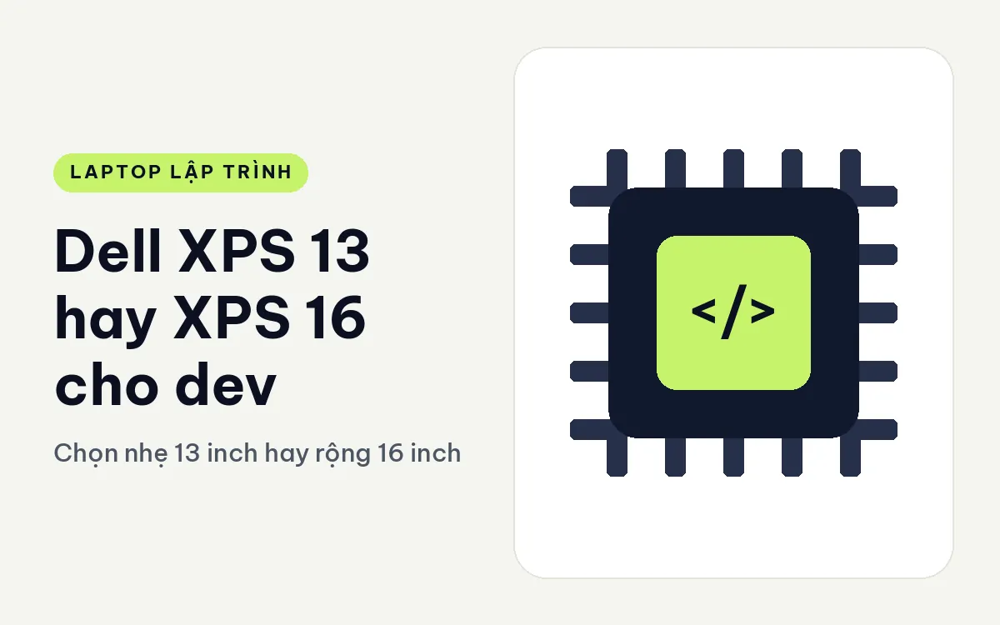
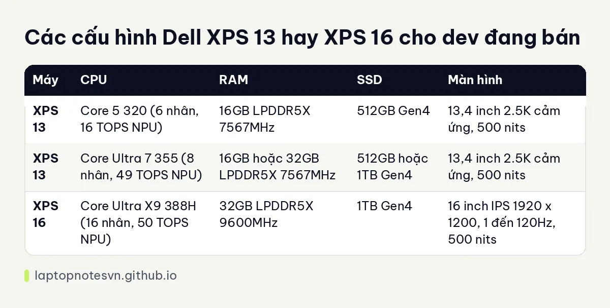

Dell XPS 13 hay XPS 16 cho dev - Chọn nhẹ 13 inch hay rộng 16 inch

Dell XPS có hai kích cỡ đối lập nhau trong dòng 2026. Một máy 13 inch cho người cần nhẹ nhất có thể, một máy 16 inch cho người cần không gian màn hình lớn. Với dev, việc chọn giữa hai máy này thường không phải câu hỏi về hiệu năng thuần mà là câu hỏi về cách bạn làm việc: bạn code ở nhiều nơi, hay chủ yếu ở một chỗ cố định.
Máy nhỏ là Dell XPS 13 DX13260.
Máy lớn là Dell XPS 16 DA16260.
Thân máy và trọng lượng của Dell XPS 13 và XPS 16
XPS 13 dày 12,7 mm, nặng khoảng 0,9 kg, pin 52Wh, màn 13,4 inch. XPS 16 dày 14,6 mm, nặng dưới 1,7 kg, pin 70Wh, màn 16 inch. Chênh lệch cân nặng gần 800 gam, tương đương một chiếc máy tính bảng. Đổi lại XPS 16 có pin lớn hơn 18Wh và diện tích màn rộng hơn nhiều.
Cả hai máy đều dùng RAM LPDDR5X hàn trên bo mạch, nên không nâng cấp được. Điều này nghĩa là dung lượng RAM bạn chọn lúc mua sẽ đi theo máy suốt vòng đời. XPS 13 có bản 16GB và 32GB, XPS 16 trong dữ liệu có bản 32GB. Muốn tính xem 16GB hay 32GB đủ cho mình, đọc bài lập trình viên cần bao nhiêu RAM.
Về cổng, bản XPS 13 Core 5 320 có 2 cổng USB-C, còn các bản Core Ultra 7 355 có Thunderbolt 4. Dữ liệu XPS 16 không liệt kê chi tiết cổng, nên hãy kiểm tra trang sản phẩm nếu bạn cần dock hay màn ngoài.
Các bản cấu hình Dell XPS 13 và XPS 16 đang có
| Máy | CPU | RAM | SSD | Màn hình |
|---|---|---|---|---|
| XPS 13 | Core 5 320 (6 nhân, 16 TOPS NPU) | 16GB LPDDR5X 7567MHz | 512GB Gen4 | 13,4 inch 2.5K cảm ứng, 500 nits |
| XPS 13 | Core Ultra 7 355 (8 nhân, 49 TOPS NPU) | 16GB hoặc 32GB LPDDR5X 7567MHz | 512GB hoặc 1TB Gen4 | 13,4 inch 2.5K cảm ứng, 500 nits |
| XPS 16 | Core Ultra X9 388H (16 nhân, 50 TOPS NPU) | 32GB LPDDR5X 9600MHz | 1TB Gen4 | 16 inch IPS 1920 x 1200, 1 đến 120Hz, 500 nits |
XPS 13 có nhiều bản, giúp bạn chọn đúng mức tiền. XPS 16 chỉ có một bản, và đó là bản cao: chip X9 388H 16 nhân, RAM 32GB tốc độ 9600MHz, SSD 1TB. Đồ họa của XPS 16 là Arc tích hợp, không phải card rời, nên đừng kỳ vọng nó chạy mô hình lớn.

Điều đáng chú ý là màn: XPS 13 là 2.5K cảm ứng, phủ 100% DCI-P3. XPS 16 là IPS 1920 x 1200 phủ 100% sRGB, tần số quét thay đổi từ 1 đến 120Hz. Màn 16 inch có độ phân giải thấp hơn tính theo mật độ điểm ảnh, nhưng diện tích lớn cho phép mở nhiều cửa sổ cạnh nhau.
Dell XPS 13 hợp việc gì, XPS 16 hợp việc gì
- Dev đi nhiều, làm ở nhiều chỗ: XPS 13 là chọn rõ ràng nhờ nhẹ và nhỏ.
- Dev ngồi bàn cố định, cần nhiều cửa sổ: XPS 16 với màn lớn và chip 16 nhân.
- Dev build nhiều, chạy test dài: XPS 16 với 16 nhân.
- Dev học tập, sinh viên: XPS 13 bản 16GB đủ cho đa số bài tập.
- Dev AI nhẹ: cả hai có NPU 49 đến 50 TOPS, nhưng không có card rời.
Màn hình và mắt
Dev nhìn màn hình nhiều giờ, nên màn tốt có ý nghĩa thật. XPS 13 có lớp Eyesafe, giảm ánh sáng xanh ở cấp độ phần cứng, theo dữ liệu. Màn cảm ứng 2.5K cho chữ sắc nét ở kích cỡ nhỏ. XPS 16 có tần số quét co giãn 1 đến 120Hz, giúp tiết kiệm pin khi hình tĩnh và mượt khi cuộn. Cả hai đều đạt 500 nits.
Nếu bạn dùng terminal chữ nhỏ và nhiều pane, màn 16 inch chứa được nhiều hơn mà không cần phóng to. Nếu bạn quen một màn ngoài ở nhà, màn 13 inch trở thành màn dự phòng gọn.
Pin, sạc và chuyện mang theo
Pin 52Wh của XPS 13 phải nuôi chip và màn 2.5K cảm ứng, còn 70Wh của XPS 16 nuôi chip 16 nhân và màn lớn hơn. Dữ liệu không đo số giờ dùng thực tế, nên bài này không đưa con số cụ thể. Điều có thể nói chắc là máy lớn có pin lớn hơn, nhưng cũng tiêu thụ nhiều hơn, nên chênh lệch thời lượng không lớn như dung lượng gợi ý.
Khi mang đi, cục sạc cũng là một phần của trọng lượng. Máy 13 inch thường đi kèm bộ sạc nhỏ hơn, giúp ba lô gọn hơn. Hãy kiểm tra cả cục sạc khi so cân nặng, đặc biệt nếu bạn đi công tác thường xuyên.
Với dev làm việc từ xa, một cách chia vai hợp lý là dùng máy nhỏ làm máy di động và màn ngoài làm màn chính tại nhà. Cách này cho kết quả gần giống một máy lớn mà không phải vác nó đi.
Chốt lại giữa Dell XPS 13 và XPS 16
Chọn XPS 13 nếu bạn mang máy hằng ngày, thích màn cảm ứng sắc nét và chọn được cấu hình vừa ý trong nhiều bản. Ghi chú riêng ở XPS 13 cho lập trình.
Chọn XPS 16 nếu bạn cần màn lớn, 16 nhân và không bận tâm trọng lượng. Bài XPS 16 cho lập trình bàn riêng về máy này.
Một mẹo nhỏ: nếu bạn đang dùng màn ngoài ở nhà và văn phòng, XPS 13 sẽ làm việc rất tốt; nếu máy là màn duy nhất của bạn, XPS 16 đáng cân nhắc.
Đăng ngày 09/11/2026